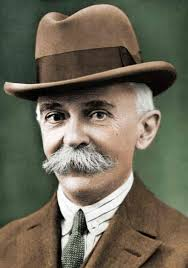
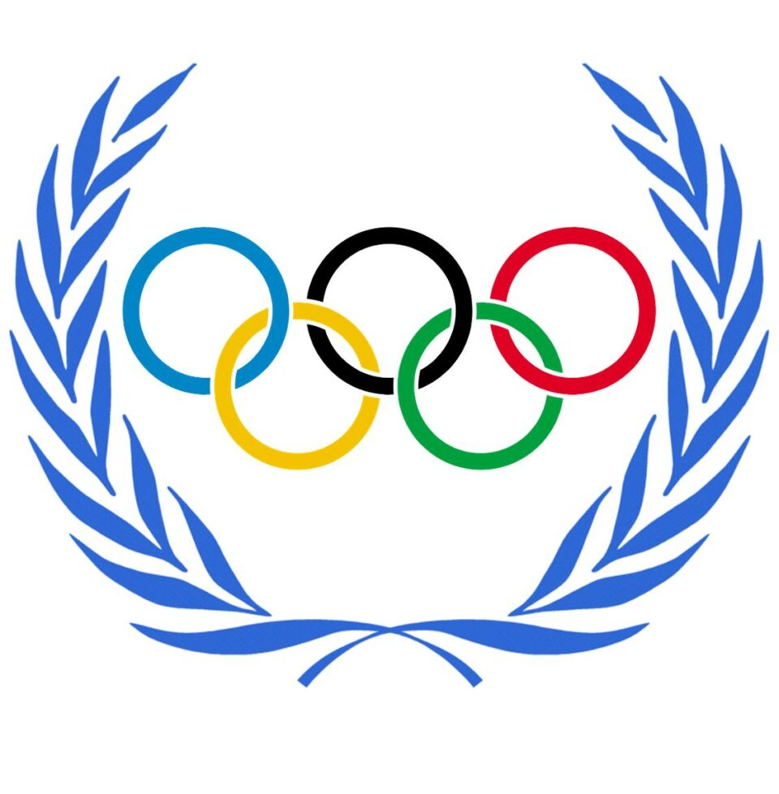

Pierre de Coubertin
Pierre de Coubertin, né Charles Pierre Fredy de Coubertin le 1ᵉʳ janvier 1863 à Paris et mort le 2 septembre 1937 à Genève en Suisse, est un historien et pédagogue français fortement influencé par la culture anglo-saxonne.
Wikipédia
Les jeux olympiques
Les Jeux olympiques (JO), aussi appelés Jeux olympiques modernes, puisqu'ils prolongent la tradition des jeux olympiques de la Grèce antique, sont des événements sportifs internationaux majeurs, regroupant les sports d’été ou d’hiver, auxquels des milliers d’athlètes participent à travers différentes compétitions tous les quatre ans, pour chaque olympiade moderne.
WikipédiaGalerie
NOTE DU COMMISSAIRE
Evian, le 02 Septembre 2024
Lorsque le directeur du Musée, m'a fait cette demande, particulière je l'avoue, d'une exposition au nom de « L'OLYMPISE, 32 jours avec Pierre de Coubertin : grandeur et mystères du père des JO modernes ».
je me suis demandé pourquoi ? Non pas pourquoi moi, excuser mon impertinence, mais, pourquoi 32 ?
Hasard du calendrier ?
Appel déjà à la France et donc à l'origine de Pierre de Coubertin ?
Ce trait d'humour d'ailleurs, quand il est croqué, apprécié de l'homme. On peut-être et, tout simplement, le début porté - bonhomme et musée et sympathie alors tout est fait pour offrir à chacun une passe temporelle et artistique ? Mais, après tout, pourquoi pas...
Pierre disait : « L'Olympisme n'est point un système, c'est un état d'esprit. Les formules les plus diverses sont bonnes pourvoyant qu'il s'agisse d'un idéal applicable à un monde époque et de contribuer le monopole inclusively.
En me mettant au travail je me suis, tout d'abord, laissé emporter par mes émotions et associées à Pierre de Coubertin, elles ne manquent pas.
Permettez-moi donc conseils pour cette exposition : tout d'abord, laissez vos cœurs et vos émotions couler comme font chaque lieu à l'imagination d'un autre, laissez votre foi et votre confiance dans la joie de ce prendre les couleurs.
AP 1 Evian, le 02 Septembre 2024 Thomas Bach, Le président du CIO(Comité International Olympique) en hommage à Pierre de Coubertin, déclarait, le 23 juin 2024 à l'université de la Sorbonne : « On n’est pas là pour glorier l’homme, mais pour comprendre le personnage ». Pensez-y durant l’exposition. C’est à ce voyage dans le quotidien, faussement banal, que vous convie cette exposition. Laissez votre moi cartésien au vestiaire, pour faire émerger votre âme d’enfant, votre sens de la dérision. Mais, en même temps, gardez bien précieusement votre sens du questionnement en éveil. Celui qui vous fait sortir de votre zone de confort, celui qui vous permet d’appréhender une situation sous un angle qui n’est pas forcément celui de la bienséance ou celui attendu. Bref laissez-vous happer par l’univers de cet homme qui a croqué la vie avec une ferveur indéniable, il était un idéaliste de l'excellence sportive et de l'unité internationale, malgré une n de vie dans la solitude et la pauvreté, par ce travailleur infatigable et... puissions-nous nous y retrouver. Au plaisir de vous rencontrer tous nombreux… Pablo Voltany, commissaire exposition « L’OLYMPISME, 32 jours avec Pierre de Coubertin : grandeur et mystères du père des JO modernes » Exposition temporaire au Palais Lumière d’Evian-Les-Bains du 2 janvier au 2 février 2025
Résumé vidéo "Pierre de coubertin"
Le documentaire "Pierre de Coubertin : Grandeur et mystères du père des JO" dévoile les multiples facettes de ce visionnaire. En modernisant les Jeux Olympiques en 1896, il a marqué l'histoire du sport mondial.
Toutefois, sa vie est également empreinte de contradictions : vision humaniste mêlée à des idées conservatrices, et une quête d’universalité parfois limitée par son contexte social et politique.
Stéphane Bern explore ces aspects, entre héritage glorieux et zones d'ombre, offrant un portrait nuancé de cet homme clé du sport
Tarif palais des lumières
Plein tarif : 8,50 €
Tarif réduit : 6,50 € (pour les étudiants, personnes âgées ou autres bénéficiaires de réduction selon les conditions)
Gratuit pour les moins de 16 ans